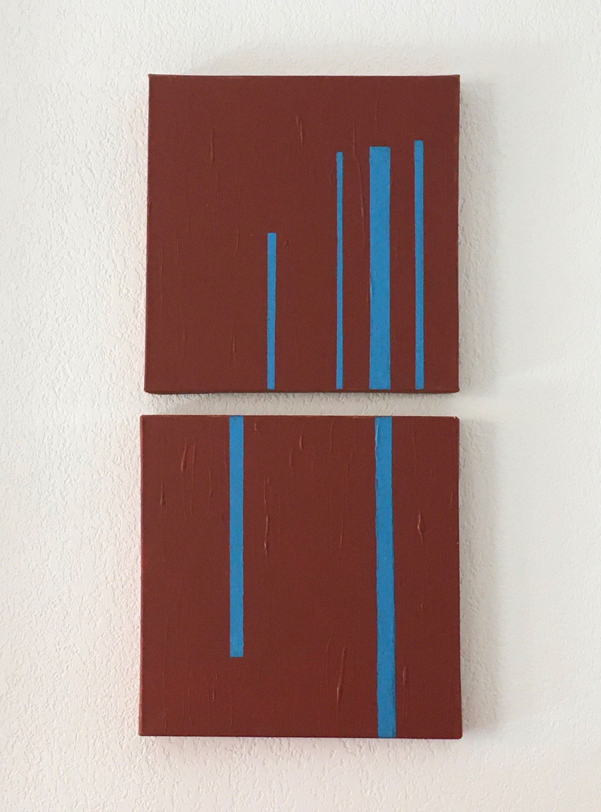

Visual Artist
Intuition,
space &
questioning.
Painting, photography and video as ways of looking, researching and asking.
View works ↓
01 — About
A visual practice built from observation and thought.
Patricia Pricken is a visual artist exploring different possibilities, materials and techniques.
Her paintings are minimalist, while photography and video serve as tools for visual research and observation.
Her practice is intuitive, yet grounded in profound philosophical questions. Through experimentation and contemplation, she explores perception, presence, space and the possibilities of visual language.
02 — Selected works
Painting / Photography / Visual research
03 — Contact
For exhibitions,
collaborations
or enquiries.
contact_neuf@proton.me
Patricia Pricken
Visual Artist